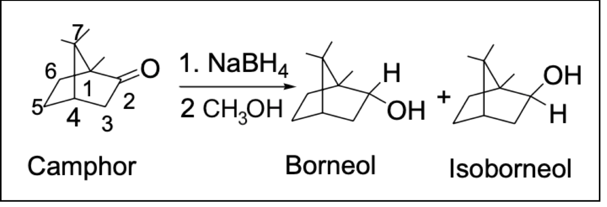

This experiment demonstrates a general method for the reduction of ketones to alcohols, the use of polarimetry to study the stereochemistry of a reaction, and introduces some commonly used tests for the qualitative analysis of alcohols and ketones.
Camphor (1,7,7-trimethylbicyclo-[2.2.1]-2-heptanone) belongs to a diverse family of naturally occurring compounds, known as terpenes, which have carbon skeletons composed of 5-carbon isoprene units. Optically active camphor is isolated from camphor trees found in Java, Brazil, China, and Sumatra.
Camphor has many practical and important uses. For example, camphor is used as a preservative in pharmaceuticals, in cosmetics, and even in embalming fluids. Camphor has also been used as an anesthetic, as a mild antiseptic, and as a cardiac stimulant.
The reduction of ketones to 2° alcohols is an example of a functional grouptransformation, i.e., a reaction that changes a group or groups attached to a compound but leaves the carbon backbone unaltered. The reverse reaction, oxidation, converts 2° alcohols back to ketones.
Figure 1. Functional group transformation of ketone to 2º alcohol
Commonly used reducing agents include complex metal hydrides, such as LiAlH4 (lithium aluminum hydride) and NaBH4 (sodium borohydride). In this experiment, we will use sodium borohydride to reduce camphor, an optically active, naturally occurring ketone.
The reduction of the ketone group in camphor can form two products, borneol or isoborneol.
Figure 2. Reduction of camphor
The products differ in the way in which the metal hydride reducing agent delivers a hydride ion to the planar carbonyl group. Stereochemical demands of the substrate, in this case camphor, can direct the addition of metal hydride to one of two faces of the carbonyl. If much more of one product is formed, the reaction can be said to be stereoselective. By determining which (if either) product is preferentially formed, it is possible to determine if and how the stereochemical demands of camphor are controlling the reduction reaction.
Once the product(s) are isolated and identified, it becomes possible to determine if the reduction was stereospecific by measuring the optical rotation of the starting material and product(s). If the reduction was stereospecific, optically pure (+)- or (-)-camphor should form only (+)- or (-)-borneol, or only (+)- or (-)-isoborneol, with no loss of optical purity.
In this experiment, you will start with either (+)- or (-)-camphor. (The camphor to be used will be assigned by your instructor.) From the sign of the optical rotations of the starting camphor and of the product(s), you can confirm the identity of the product(s) and determine the stereoselectivity, by determining if one of the expected products, borneol or isoborneol, is formed in greater amount. (You could also evaluate the stereospecificity by measuring optical rotation of both the starting material and the isolated purified product(s) and determining the optical purity or enantiomeric excess of each.)
Video
https://www.youtube.com/watch?v=uIZcelp7vlo&list=PLCAB4E62EFB56C602